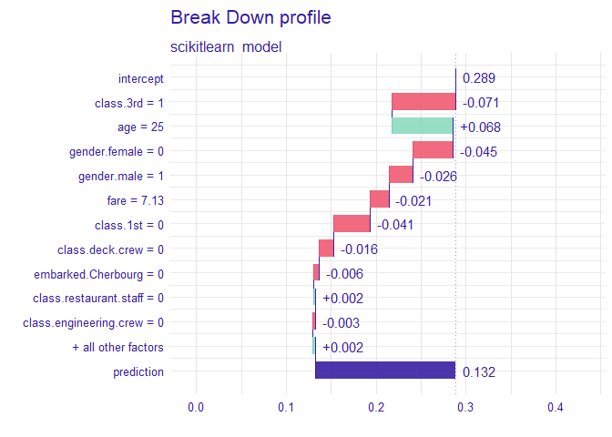
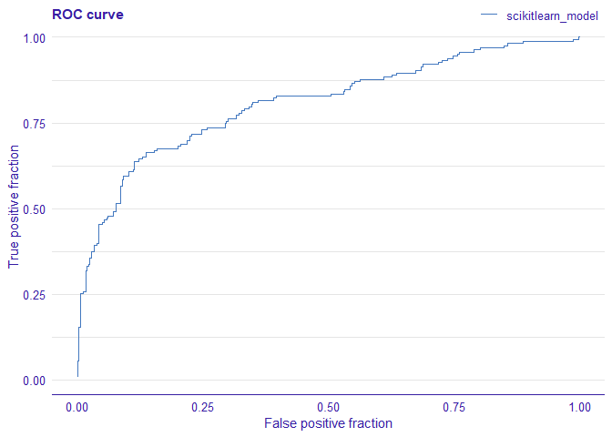

Overview
The DALEXtra package is an extension pack for DALEX package. It contains various tools for XAI (eXplainable Artificial Intelligence) that can help us inspect and improve our model. Functionalities of the DALEXtra could be divided into two areas.
- Champion-Challenger analysis
- Lets us compare two or more Machine-Learning models, determinate which one is better and improve both of them.
- Funnel Plot of performance measures as an innovative approach to measure comparison.
- Automatic HTML report.
- Cross langauge comaprison
- Creating explainers for models created in different languges so they can be explained using R tools like DrWhy.AI family.
- Currently supported are Python scikit-learn and keras, Java h2o, R xgboost, mlr, mlr3 and tidymodels.
Installation
# Install the development version from GitHub:
# it is recommended to install latest version of DALEX from GitHub
devtools::install_github("ModelOriented/DALEX")
# install.packages("devtools")
devtools::install_github("ModelOriented/DALEXtra")or latest CRAN version
install.packages("DALEX")
install.packages("DALEXtra")Other packages useful with explanations.
devtools::install_github("ModelOriented/ingredients")
devtools::install_github("ModelOriented/iBreakDown")
devtools::install_github("ModelOriented/shapper")
devtools::install_github("ModelOriented/auditor")
devtools::install_github("ModelOriented/modelStudio")Above packages can be used along with explain object to create explanations (ingredients, iBreakDown, shapper), audit our model (auditor) or automate the model exploration process (modelStudio).
Champion-Challenger analysis
Without aby doubt, comaprison of models, espacially black-box ones is very important use case nowadays. Every day new models are being created and we need tools that can allow us to determinate which one is better. For this purpose we present Champion-Challenger analysis. It is set of functions that creates comaprisons of models and later can be gathered up to created one report with generic comments. Example of report can be found here. As you can see any explenation that has generic plot() function can be plotted.
Funnel Plot
Core of our analysis is funnel plot. It lets us find subsets of data where one of models is significantly better than other ones. That ability is insanely usefull, when we have models that have similiar overall performance and we want to know which one should we use.
library("mlr")
library("DALEXtra")
task <- mlr::makeRegrTask(
id = "R",
data = apartments,
target = "m2.price"
)
learner_lm <- mlr::makeLearner(
"regr.lm"
)
model_lm <- mlr::train(learner_lm, task)
explainer_lm <- explain_mlr(model_lm, apartmentsTest, apartmentsTest$m2.price, label = "LM",
verbose = FALSE, precalculate = FALSE)
learner_rf <- mlr::makeLearner(
"regr.randomForest"
)
model_rf <- mlr::train(learner_rf, task)
explainer_rf <- explain_mlr(model_rf, apartmentsTest, apartmentsTest$m2.price, label = "RF",
verbose = FALSE, precalculate = FALSE)
plot_data <- funnel_measure(explainer_lm, explainer_rf,
partition_data = cbind(apartmentsTest,
"m2.per.room" = apartmentsTest$surface/apartmentsTest$no.rooms),
nbins = 5, measure_function = DALEX::loss_root_mean_square, show_info = FALSE)
plot(plot_data)[[1]] Such situation is shown in the following plot. Both,
Such situation is shown in the following plot. Both, LM and RF models have smiliar RMSE, but Funnel Plot shows that if we want to predict expensive or cheap apartemnts, we definetly should use LM while RF for average priced apartments. Also without any doubt LM is much better than RF for Srodmiescie district. Following use case show us how powerfull tool can Funnel Plot be, for example we can compund two or models into one based of areas acquired from the Plot and thus improve our models. One another advantage of Funnel Plot is that it doesn’t require model to be fitted with Variables shown on the plot, as you can see, m2.per.room is an artificial variable.
Cross langauge comaprison
Here we will present short use case for our package and its compatibility with Python.
How to setup Anaconda
In order to be able to use some features associated with DALEXtra, Anaconda in needed. The easiest way to get it, is visiting Anaconda website. And choosing proper OS as it stands in the following picture.  There is no big difference bewtween Python versions when downloading Anaconda. You can always create virtual environment with any version of Python no matter which version was downloaded first.
There is no big difference bewtween Python versions when downloading Anaconda. You can always create virtual environment with any version of Python no matter which version was downloaded first.
Windows
Crucial thing is adding conda to PATH environment variable when using Windows. You can do it during the installation, by marking this checkbox.

or, if conda is already installed, follow those instructions.
Loading data
First we need provide the data, explainer is useless without them. Thing is Python object does not store training data so always have to provide dataset. Feel free to use those attached to DALEX package or those stored in DALEXtra files.
titanic_test <- read.csv(system.file("extdata", "titanic_test.csv", package = "DALEXtra"))Keep in mind that dataframe includes target variable (18th column) and scikit-learn models cannot work with it.
Creating explainer
Creating exlainer from scikit-learn Python model is very simple thanks to DALEXtra. The only thing you need to provide is path to pickle and, if necessary, something that lets recognize Python environment. It may be a .yml file with packages specification, name of existing conda environment or path to Python virtual environment. Execution of scikitlearn_explain only with .pkl file and data will cause usage of default Python.
library(DALEXtra)
explainer <- explain_scikitlearn(system.file("extdata", "scikitlearn.pkl", package = "DALEXtra"),
yml = system.file("extdata", "testing_environment.yml", package = "DALEXtra"),
data = titanic_test[,1:17], y = titanic_test$survived, colorize = FALSE)## Preparation of a new explainer is initiated
## -> model label : scikitlearn_model ( default )
## -> data : 524 rows 17 cols
## -> target variable : 524 values
## -> predict function : yhat.scikitlearn_model will be used ( default )
## -> predicted values : numerical, min = 0.02086126 , mean = 0.288584 , max = 0.9119996
## -> model_info : package reticulate , ver. 1.16 , task classification ( default )
## -> residual function : difference between y and yhat ( default )
## -> residuals : numerical, min = -0.8669431 , mean = 0.02248468 , max = 0.9791387
## A new explainer has been created!Now with explainer ready we can use any of DrWhy.Ai universe tools to make explanations. Here is a small demo.
Creating explanations
library(DALEX)
plot(model_performance(explainer))
library(ingredients)
plot(feature_importance(explainer))
describe(feature_importance(explainer))## The number of important variables for scikitlearn_model's prediction is 3 out of 17.
## Variables gender.female, gender.male, age have the highest importantance.
library(iBreakDown)
plot(break_down(explainer, titanic_test[2, 1:17]))
describe(break_down(explainer, titanic_test[2, 1:17]))## Scikitlearn_model predicts, that the prediction for the selected instance is 0.132 which is lower than the average model prediction.
##
## The most important variable that decrease the prediction is class.3rd.
##
## Other variables are with less importance. The contribution of all other variables is -0.108.
library(auditor)
eval <- model_evaluation(explainer)
plot_roc(eval)
# Predictions with newdata
predict(explainer, titanic_test[1:10, 1:17])